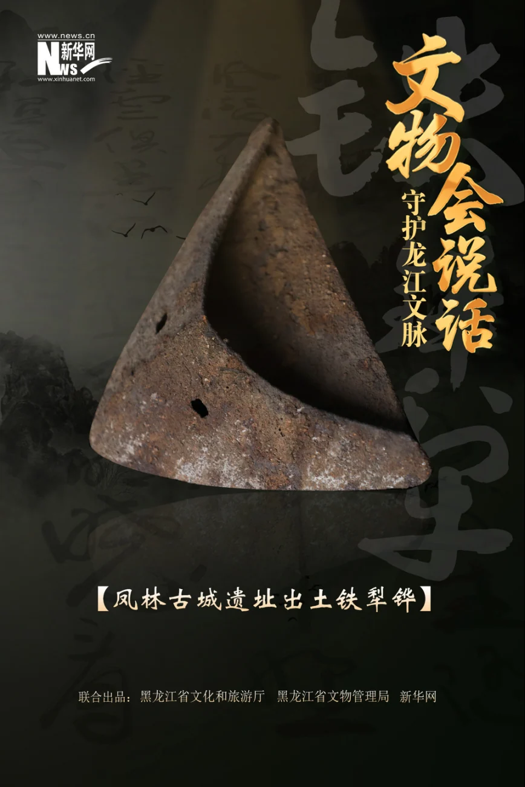

景点介绍
凤林城址位于成富朝鲜族满族乡凤林村附近，与七星河南岸的宝清炮台山城遥相对望。城址面积约120万平方米，多道城墙将古城分成九个城区。
1998至2000年的发掘主要集中在第七城区，清理出36处房址和37处灰坑、窖穴。半地穴式房址保留了居住空间的轮廓，窖穴提供了储藏线索。出土陶器、铁器和炭化作物让考古人员得以讨论当时的手工业、耕作和饮食。
凤林城是七星河流域汉魏时期古城群中规模较大的一座。这里出土的铁制农具和其他遗址的类似发现表明，耕种在当时已是当地居民生产生活的一部分。
